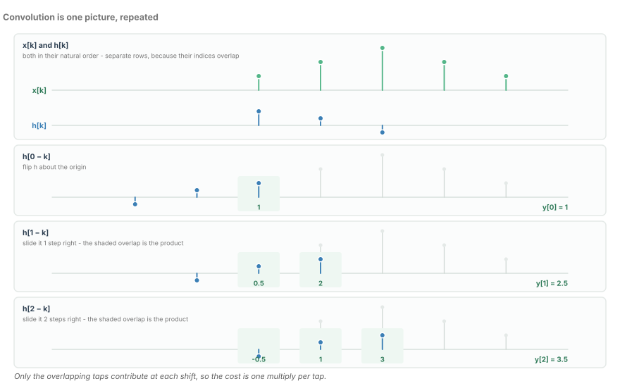
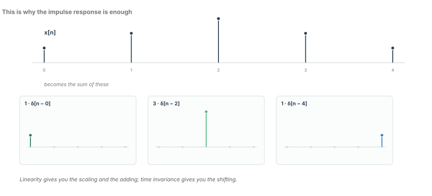
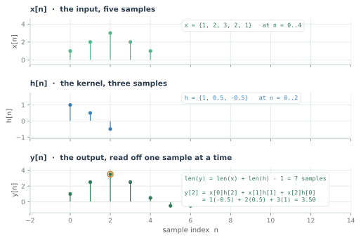
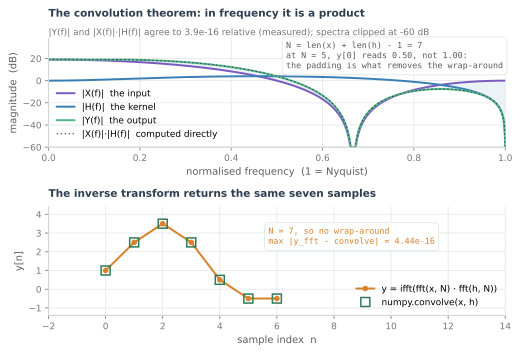
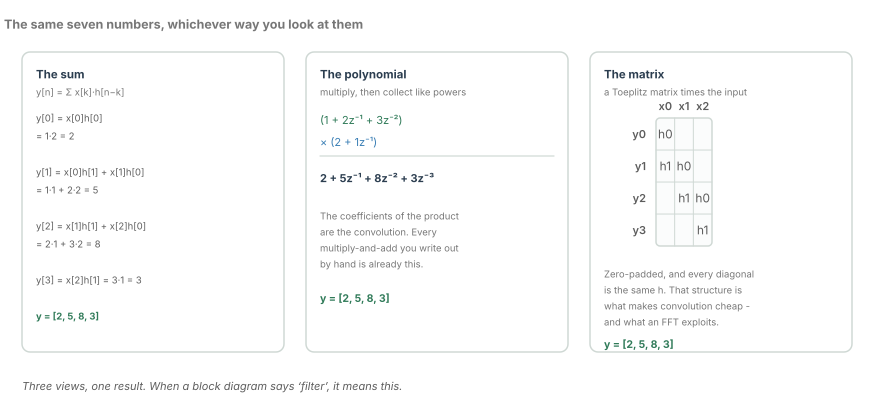
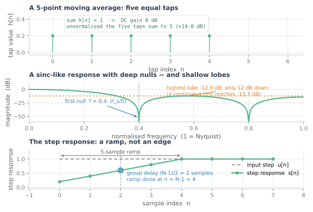
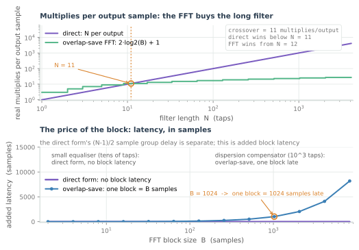

Convolution, and Why Every DSP Block Is One
Flip, shift, multiply, sum - then the same operation as a polynomial product, and as a matrix. Three views of one idea.
Convolution is the operation every DSP block is already performing, whether or not its author would say so. The channel, the feed-forward equaliser, the pulse shaper and the dispersion compensator are all convolutions — and the last of them is so long that nobody computes it as one. The only reason it can be moved into the frequency domain at all is the theorem in the middle of this chapter.
The definition is one line, and it is why a single vector of coefficients can describe two thousand kilometres of fibre and a dozen optical amplifiers. That is not a small claim: if a channel needed more than one function to describe it, there would be nothing for an adaptation loop to converge on.
There are three ways to write that one line down — as a sum, as a polynomial product, and as a matrix — and an engineer who can move between them without thinking will debug filters that other people cannot.
Flip, shift, multiply, sum
The definition, for two sequences:
Everything difficult about convolution is in the index $n-k$. As $n$ increases by one, the sequence $h$ slides one sample to the right relative to $x$, and only the positions where the two sequences overlap contribute.
The subtraction is a flip: $h[n-k]$ is $h[k]$ read backwards and then shifted, and it is $h$ that gets flipped, not $x$. That choice is pure convention — the operation is commutative, so flipping the other sequence gives the same answer. Pick one and never re-derive it on a whiteboard with three people watching.
The summation over $k$ is what makes this a sliding inner product: at each shift the accumulator adds one product per overlapping tap and nothing else. Flip, shift, multiply, sum — four verbs, one operation, repeated once per output sample.

The figure walks the first three shifts of a five-sample input against a three-tap kernel, and the arithmetic is small enough to check by eye: one overlapping tap gives $y[0] = 1$, two give $y[1] = 2.5$, and the third shift is the first with all three taps overlapping, giving $y[2] = 3.5$.
One implementation note belongs here. Hardware does not flip anything: a FIR is a tapped delay line with the coefficients in natural order and the data sliding past them, which is the same sum with the running index on $x$. The reversal is concealed in the delay line's addressing, and it reappears the instant you write the operation as a correlation — which is what a matched filter is, and where the classic receiver bug lives.
Linearity and time invariance are the whole trick
Nothing so far has required the system to be anything in particular. What makes convolution useful is what it says about a system that is both linear and time-invariant.
Start from the input. Any sequence can be written as a pile of scaled, shifted impulses:
There is no approximation in that line: the sum keeps only the term where $k = n$.
Now push the decomposition through the system. Linearity means the response to a sum is the sum of the responses, and the response to a scaled impulse is the scaled response. Time invariance means the response to $\delta[n-k]$ is the same $h$, shifted, and not a different function because the impulse arrived later. Together they give
which is the definition again, derived rather than asserted.

Notice how little was assumed to get there. One function — the response to a single impulse — characterises the system completely, for every input, forever. That is the only reason a channel estimate is a vector rather than a database, and the reason an adaptive equaliser has anything to converge on.
Break either property and the edifice falls.
- Non-linearity. A saturating driver does not scale its response with the input: feed it twice the amplitude and the output is not twice as large, so no single $h$ describes it. Direct detection is square-law in the optical field, which is why coherent receivers exist at all.
- Time variation. A sampler is perfectly linear and completely time-varying: an impulse arriving between clock edges is rejected while one a microsecond earlier passes, so the response depends on arrival time. The same is true of a channel whose local oscillator drifts, which is why carrier recovery is a separate block with a shorter memory than the equaliser.
Most of what goes wrong in a link is one of these two assumptions being violated slowly rather than loudly. When an equaliser refuses to converge, the useful question is not which algorithm to switch to, but which property the datapath has quietly broken: a clipping ADC, an overdriven modulator, or an adaptation loop chasing a drifting laser.
Worked once by hand
Take a five-sample input and a deliberately awkward three-tap kernel:
The output sample at $n = 2$ is the first one where every tap contributes:
and the whole output is
Seven samples, which is $5 + 3 - 1$. The length rule is not a curiosity: the last input sample must pass every tap before the filter is finished with it. Truncating the output back to five samples throws away the tail — the very samples a block processor needs at the boundary, and the reason overlap-save exists.

The asymmetry is the point. The kernel has a cursor tap of 1 and a trailing tap of $-0.5$, so the output starts at $1$ and ends at $-0.5$, carrying the kernel's lopsidedness through to the answer. Make every hand-worked example asymmetric for that reason. A symmetric kernel convolved with a symmetric input gives a symmetric output, and behind that symmetry a reversed index convention and a half-sample timing error both look like nothing at all. The test vector that catches a bug is the one that breaks the symmetry.
The convolution theorem
Convolution in the time domain becomes pointwise multiplication in the frequency domain:
One complex multiply per frequency bin replaces a sum of $N$ products per output sample, provided you are willing to pay for the transforms. That sentence is the whole basis of the frequency-domain equaliser, and the reason a dispersion compensator with hundreds of taps is affordable at all.
The identity is exact, not an approximation, and the figure measures it. On the worked pair, transforms of length 7, a multiply and an inverse transform return those seven samples with a maximum difference of about $10^{-15}$ against the direct sum — floating-point noise. The spectral view agrees: $|X(f)| \cdot |H(f)|$ matches $|Y(f)|$ to better than $10^{-15}$ relative.

The catch is the word circular. The DFT sums over a finite block, so the product it computes is a convolution that wraps: sample $n+N$ lands on top of sample $n$. Pad both sequences to at least $\mathrm{len}(x) + \mathrm{len}(h) - 1$ and there is nothing left to wrap onto. The figure shows what happens when you do not: transform both sequences at length 5 — the length of $x$, the number you would reach for if you had not thought about it — and $y[0]$ reads $0.50$ where the linear convolution says $1.00$, because the tail of the answer has folded back onto its head.
That failure mode deserves respect. A missing zero-pad adds no noise and raises no flag; it produces a plausible answer with the wrong first samples, and those samples sit at the boundary everything downstream trusts. Treat the padding length as an invariant of the block, computed once from the filter length. Overlap-save is the production form of the same rule: transform a block, multiply, inverse transform, discard the first $\mathrm{len}(h)-1$ samples that carry the wraparound, and slide forward by the number you kept.
Three views of one operation
Figure 5 puts the same small convolution in three forms: a three-sample input against a two-tap kernel, giving $y = \{2, 5, 8, 3\}$ in every column.

The sum is the definition, written out one output sample at a time. It is what you simulate, and what belongs in the comment above the RTL.
The polynomial treats the sequences as coefficients of polynomials in $z^{-1}$. Here $X(z) = 1 + 2z^{-1} + 3z^{-2}$ and $H(z) = 2 + z^{-1}$; multiply them and collect like powers to get $2 + 5z^{-1} + 8z^{-2} + 3z^{-3}$. The coefficients of the product are the convolution — schoolbook long multiplication is this operation — and the reason $z^{-1}$ is the right notation for a delay is that delaying a sequence multiplies its polynomial by $z^{-1}$.
The matrix writes the same thing as $y = Hx$, where $H$ is zero-padded and constant along every diagonal: a Toeplitz matrix. Each output sample is one row of that matrix times the input vector.
The matrix view is not decoration. A Toeplitz matrix becomes circulant once it is wrapped, circulant matrices are diagonalised by the Fourier basis, and a diagonalised matrix multiplication is a pointwise multiply — the convolution theorem with the linear algebra left in. Toeplitz structure is what the FFT exploits.
It is also the fastest way to debug. Convolution with $h$ gives a matrix that is constant along its diagonals; correlation with $h$ gives one that is constant along its anti-diagonals, a Hankel matrix. If the matrix in your notes is Hankel, you are correlating, and no amount of staring at the sum will tell you that as quickly as one glance at the indices.
What the algebra buys you
Convolution obeys four laws, and each one is a licence to do something concrete in a design.
| Law | Statement | What it buys |
|---|---|---|
| Commutative | $x * h = h * x$ | Either operand may be the filter. Applying a channel estimate to a training sequence gives the same answer as the other way round. |
| Associative | $(x * h_1) * h_2 = x * (h_1 * h_2)$ | Cascaded linear blocks collapse into one response, and in frequency their responses multiply. Order in the chain is a cost decision, not a correctness one. |
| Distributive | $x * (h_1 + h_2) = x * h_1 + x * h_2$ | A parallel bank summed at the output is interchangeable with one filter whose taps are the sum. Polyphase decomposition rests on this. |
| Identity | $x * \delta = x$ | $\delta$ is the identity, and $\delta[n-d]$ is a pure delay of $d$ samples — the reference an adaptation loop drives towards. |
The associativity row is the one that earns its keep in a receiver. Because linear blocks compose, the order of the FFE, the dispersion equaliser and the pulse shaper is a decision about where the multipliers and the latency are cheapest, not about whether the receiver works. That freedom is worth a fortune, and it lasts exactly as long as every block in the chain is linear and time-invariant.
Two caveats, both learned the hard way. The laws are exact in exact arithmetic and only approximately true in fixed point: reordering a cascade changes where rounding and saturation happen, so a word length that is comfortable in one order can clip in the other. Associativity is a licence to reorder on paper, not to reorder without re-simulating. And every law here assumes LTI. Move a convolution across a decision device and associativity is gone, because a decision is not a convolution — the whole reason a DFE cannot be shuffled around its neighbours, and the reason error propagation has no algebraic cure.
Convolution is not correlation
Correlation is the same sum with a plus where convolution has a minus:
That one sign changes what the answer means. The peak of a correlation sits at the lag where the two sequences line up, and the operation is a convolution with a time-reversed kernel:
The matched filter is a correlation. To maximise the signal-to-noise ratio at the sampling instant you correlate the received samples against the expected pulse, and because hardware is built to convolve, you load the coefficients in reverse order. Matched filter, correlation and convolution with a reversed kernel are three names for one block.
Forgetting it is one of the classic receiver bugs, and nasty because it does not look like one. Correlate with $h$ where you should have used $h_{\mathrm{rev}}$ and the peak does not shrink — it appears at the wrong lag, displaced by a fixed number of samples set by the kernel's shape. A timing recovery loop exists to remove fixed offsets, so it finds the displaced peak, locks onto it, and reports success. The symptom is not a failure to lock; it is a lock at the wrong phase, a persistent SNR penalty, and a centre tap that refuses to sit in the middle of the equaliser.
The simplest kernel, honestly assessed
Five equal taps summing to one is the smallest filter worth arguing about. Normalising gives 0 dB at DC; leave the $1/N$ out and the kernel has a gain of $5$ — $+14$ dB, and over two bits of headroom gone from a fixed-point datapath. That mistake is worth a lint rule.

The rest of the response is honest and unimpressive. The first null lands at one fifth of the sample rate — $0.4$ of Nyquist — and the highest lobe between the nulls is $-12.0$ dB; even the continuous sinc reaches only $-13.3$ dB. Twelve decibels of stopband is not a filter; it is a suggestion.
Two things make it worth a section anyway. As a test vector it is excellent: equal taps mean an impulse in produces a flat rectangle out, and an indexing or scaling error is visible by inspection. And as a building block it is not a joke at all — the boxcar is the section a CIC decimator is made of, where the arithmetic is add-and-subtract instead of multiply and the shallow sidelobes are cleaned up by the stages that follow. The judgement is about where the boxcar sits in a chain, not about whether it is a good filter. On its own, it is not.
The step response repays a careful look. Five equal taps turn a step into a five-sample ramp, and the midpoint of that ramp is the group delay, $(N-1)/2 = 2$ samples. A flat average in the tap domain is a two-sample delay and a smear in the time domain, and every linear-phase filter has the same shape with the corners sanded off.
What it costs
Direct convolution is one multiply per tap per output sample, and it has no block latency. That is the whole cost model, and it is why a 20-tap FFE at 128 GSa/s is 2.56 Tera-MAC/s of arithmetic.
The block form trades latency for a different curve. Transform a block of $B$ samples, multiply by the transform of the kernel, inverse transform, and amortise the three operations over $B$ outputs:

Read the crossover off the figure rather than from a rule of thumb. At $N = 11$ both forms cost 11 multiplies per output; the direct form wins below that and the block form is strictly cheaper from $N = 12$. Above the crossover the differences are large:
| Filter length $N$ | Block $B$ | Direct | Overlap-save |
|---|---|---|---|
| 11 | 32 | 11.0 | 11.0 |
| 16 | 32 | 16.0 | 11.0 |
| 64 | 128 | 64.0 | 15.0 |
| 256 | 512 | 256.0 | 19.0 |
| 1024 | 2048 | 1024.0 | 23.0 |
The curve is a staircase, and the staircase matters more than the crossover. Within a block size the block form's cost is constant: 17 to 32 taps all cost 13 multiplies per output, because they round up to the same transform length. If an equaliser needs 20 taps, take 32 — the thirty-third doubles the transform. Sizing to the minimum tap count instead of to the transform boundary costs a redesign later.
None of that makes the FFT the right answer for a short filter, and this is where an arithmetic-only view misleads. Thirteen multiplies against twenty is a 35% saving, bought with a transform engine, a block buffer, two blocks in flight and a block of latency. For a 20-tap FFE the direct form is right, and every shipping receiver knows it. At 64 taps it is 15 against 64 and the argument is over; at 512 taps it is 21 against 512. That is why dispersion lives in the frequency domain and the FFE does not.
Latency is the other half of the trade. The block form adds a whole block, because the inverse transform cannot start until the last input sample has arrived. At 128 GSa/s a 1024-point block is 8 ns late — invisible next to a FEC frame, fatal inside a feedback loop.
One caveat about the model. The figure counts real multiplies per output, assumes $B$ outputs per block, and ignores twiddle storage, memory traffic and the fact that a complex butterfly is not one real multiply. The shape and the crossover are trustworthy; the absolute numbers are a budget for a design conversation, not a synthesis report. Use the figure to ask not whether the FFT is cheaper, but whether the FFT engine you would have to build is cheaper than the multipliers you would otherwise instantiate.
In the optical link
What to carry forward
- Convolution is flip, shift, multiply, sum: $y[n] = \sum_k x[k]\,h[n-k]$. Flipping $h$ rather than $x$ is convention only, because the operation is commutative.
- Linearity plus time invariance is the entire reason one $h$ characterises the system. Break either and a channel estimate stops being a vector.
- Three views of one operation: the sum, the polynomial product in $z^{-1}$, and multiplication by a Toeplitz matrix. The Toeplitz structure is what the FFT exploits.
- Commutativity, associativity, distributivity and $\delta$ each buy a concrete move: reorder a chain, collapse a cascade, merge a parallel bank, or name a pure delay.
- $\mathrm{DFT}(x * h) = \mathrm{DFT}(x) \cdot \mathrm{DFT}(h)$ is exact, and it is circular. Pad to $\mathrm{len}(x) + \mathrm{len}(h) - 1$ or the tail folds onto the head.
- Direct convolution costs $N$ multiplies per output; overlap-save costs $2\log_2(B) + 1$. The figure puts the crossover at 11 taps, and the block form's cost is a staircase in the block length.
- Correlation is convolution with a reversed kernel. The matched filter is a correlation, and forgetting the reversal moves the peak without removing it.
Convolution is the time-domain statement of what a linear system does. The next chapter writes the same relationship as a ratio of polynomials, and uses it to answer the question convolution handles badly: where the poles are, and whether the system is stable.